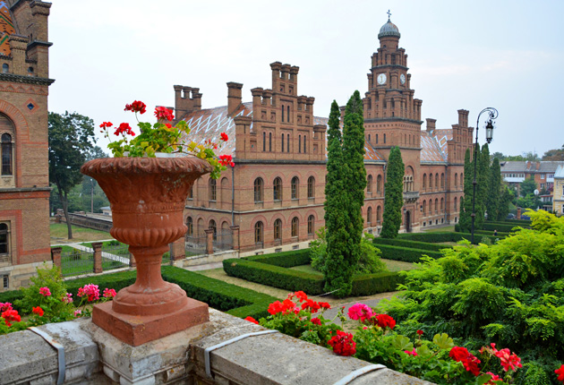
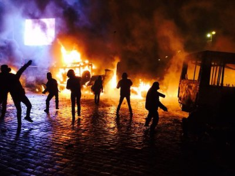
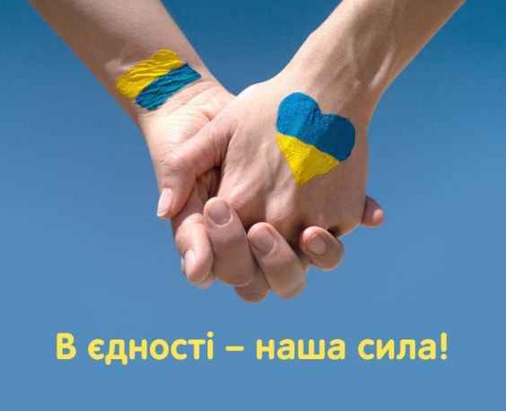
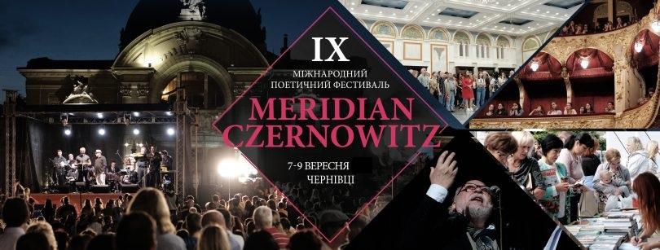

Вступ
Чернівці, розташовані на заході України, мають багатий історичний спадок і яскраву культурну атмосферу. У XXI столітті місто пережило значні зміни, зокрема політичні, економічні та соціальні трансформації. Основні події, такі як війна, що розпочалася у 2020 році, і пандемія COVID-19, суттєво вплинули на життя чернівчан, а 2024 рік став важливим етапом відновлення і розвитку міста.
Початок XXI століття: Відродження міста
Чернівці, місто з багатою історією та культурною спадщиною, продовжують свій шлях у XXI столітті, зберігаючи унікальну атмосферу мультикультурного центру. З початку незалежності України в 1991 році місто пережило важливі соціально-економічні та політичні зміни, а на початку 2000-х років Чернівці стали центром інвестиційних проєктів, що сприяло модернізації міської інфраструктури, відновленню історичних районів та будівництву нових житлових комплексів.
Вже в 2004 році Чернівці почали привертати увагу як туристичний центр, завдяки своїй архітектурній спадщині та культурним традиціям. Протягом цього періоду відзначено зростання малого та середнього бізнесу, що стало основою для економічного зростання, а також нові можливості в розвитку готельного бізнесу, ресторанів і розважальних закладів, що сприяло не лише покращенню економічної ситуації, але й створенню нових робочих місць.
Однією з найважливіших подій стало включення у 2011 році Резиденції митрополитів Буковини і Далмації до списку Світової спадщини ЮНЕСКО, що зміцнило статус міста як культурного осередку та значно підвищило туристичну привабливість, зберігаючи його традиційний вигляд, особливо в районах, таких як Австрійський квартал та Центральна площа.
Події Євромайдану
Однією з ключових подій для Чернівців стала участь міста в протестах Євромайдану у 2013-2014 роках. Жителі активно підтримували демократичні зміни, протестуючи проти корупції та за європейський вектор розвитку України. Ця енергія єдності і прагнення до змін підштовхнула до подальшої активності в громадському житті.
Війна в Україні (2020)
Початок війни в Україні в 2020 році суттєво вплинув на Чернівці. Місто стало гуманітарним центром, приймаючи тисячі переселенців із зони бойових дій. Місцева влада та громада об'єднали зусилля для надання допомоги постраждалим. Волонтерські організації активно працювали над забезпеченням їжі, медикаментів та житла для людей, які втратили все через війну. Важливою подією стала організація різноманітних благодійних акцій, концертів і ярмарків, спрямованих на підтримку армії та постраждалих. Це не лише згуртувало місцеву громаду, але й зміцнило почуття національної ідентичності серед чернівчан.
Пандемія COVID-19
У 2020 році Чернівці, як і вся Україна, зіткнулися з викликами пандемії COVID-19. Місто стало одним із перших регіонів, де зафіксували сплеск захворюваності. Введення карантинних обмежень стало важким випробуванням для бізнесу, особливо для сфери послуг. Місцева влада швидко відреагувала на ситуацію, впровадивши заходи для підтримки підприємців і мешканців. Була організована допомога для медичних установ, а волонтери активно працювали над забезпеченням продуктами та медикаментами для найбільш вразливих верств населення. Віртуальні формати заходів стали новою реальністю, зокрема для культурних подій.
Відновлення та адаптація (2022-2023)
Після значних економічних труднощів, 2022 рік став початком відновлення для Чернівців. Місто поступово адаптувалося до нових умов, і багато підприємств перейшли на нові формати роботи. Інтернет-торгівля та дистанційні послуги стали звичними, і бізнес почав використовувати новітні технології для залучення клієнтів. У цей період активно розвивалася сфера ІТ-технологій. Чернівці стали місцем, де з'являлися нові стартапи, і місто почало залучати інвесторів, зацікавлених у розвитку місцевого бізнесу. Співпраця між університетами та підприємствами дозволила підготувати кваліфіковані кадри для технологічного сектору.
Культурні події та освітні ініціативи
У 2023 році культурне життя Чернівців почало відновлюватися, і місто стало центром для проведення фестивалів, виставок та концертів. Літературний фестиваль "Meridian Czernowitz" продовжував залучати письменників та поетів з різних країн, зміцнюючи культурні зв’язки і популяризуючи українську літературу. Освіта також стала важливою складовою відновлення. Чернівецький національний університет, один з найпрестижніших в Україні, розвивав нові програми, орієнтуючи своїх студентів на потреби сучасного ринку праці. Співпраця з міжнародними закладами дозволила університету пропонувати студентам можливості обміну та стажувань за кордоном.
2024 рік: Нові горизонти
Станом на 2024 рік Чернівці стали важливим культурним і економічним центром, попри виклики, з якими місто стикалося в останні роки. У цей час Чернівці демонструють стабільний ріст у кількох сферах:
Економіка:Економіка Чернівців почала відновлюватися після важких років. Місцеві бізнеси активізували свою діяльність, зокрема в сферах торгівлі, послуг і туризму. Зросла кількість стартапів у сфері ІТ, що сприяло розвитку нових технологій.
Соціальні ініціативи:Чернівці залишаються центром волонтерської діяльності. Місцеві організації продовжують допомагати переселенцям і постраждалим від війни. Громадські акції та благодійні заходи стали звичними, підкреслюючи солідарність та єдність громади.
Культура і мистецтво:Культурне життя Чернівців процвітає. У 2024 році місто активно проводить фестивалі, виставки та культурні події. Це допомагає не лише відновити культурну атмосферу, але й привернути туристів, які прагнуть відчути місцеву культуру.
Освіта і наука:Чернівецький національний університет та інші навчальні заклади продовжують впроваджувати нові програми, адаптуючи їх до сучасних вимог. Співпраця з бізнесом дозволяє студентам отримувати практичний досвід, що важливо для їхньої подальшої кар'єри.
Екологічні ініціативи:Місцева влада активно працює над поліпшенням екологічної ситуації в місті. Програми з озеленення, збереження водних ресурсів та чистоти повітря набирають популярності. Жителі беруть участь у екологічних акціях, спрямованих на поліпшення якості життя.
Висновок
Сучасна історія Чернівців у XXI столітті — це розповідь про стійкість, єдність і відновлення. Війна 2020 року та пандемія COVID-19 стали великими викликами, але мешканці міста змогли об’єднатися для подолання труднощів. Станом на 2024 рік Чернівці стають символом відродження, в якому поєднуються традиції та сучасність, культурне багатство та прагнення до інновацій. Місто продовжує розвиватися, приваблюючи нових мешканців, туристів та інвесторів, і залишається важливим центром життя на заході України.